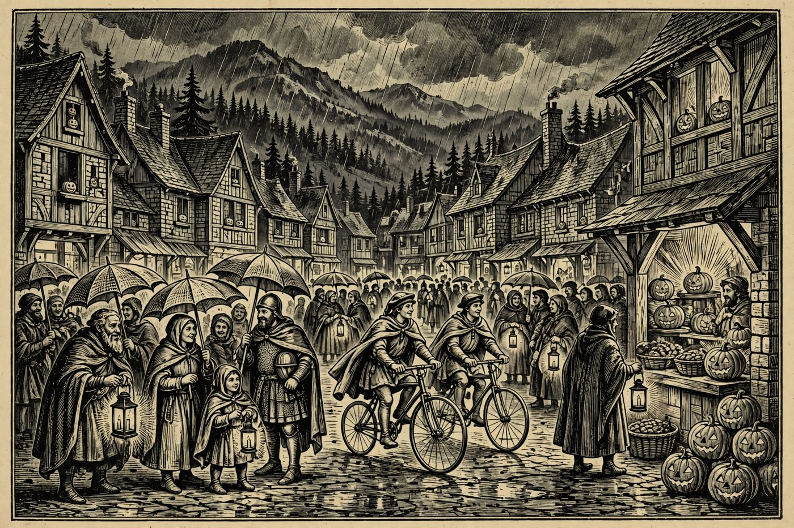

Hail, guest of the Hearth, and mind the puddles on the Fredas road — the rain comes down hard over the Rim today, the pines drip and shine, and Mogollon’s Hearth keeps a dry bench and a warm mug waiting for every traveler. PAYSON — Halloween eve brings live music to Payson tonight, with an acoustic set at 5 and the T-BoneZ at 7:30, while Sedona paints its Marigold Mural and Prescott opens a brand-new three-day gravel bike race, a spooky story night, and a murder-mystery dinner. Tomorrow the Holds turn full Halloween — trunk-or-treats in Camp Verde, Sedona, and Show Low — and on Sunday, Nov. 1, a brand-new TJ Maxx opens its doors right here in Payson. By the Nine, take an umbrella today and a costume tomorrow, and the weekend is yours.
Happening in the Holds Today
 Payson— Jeordie — acoustic live music — today at 5 in the afternoon at Tox Bar in Payson, as listed on Bandsintown. An early-evening acoustic set opens Halloween weekend in the Hold — small room, close music, and an easy stop before supper in town. Guests who like live music without a late night will find this the gentlest start to the weekend. Check the Bandsintown Payson page before heading out, as small-venue times can shift.— The T-BoneZ — live music — tonight at 7:30 at Janey’s Coffee Co. & Bodega in Payson, as listed on Bandsintown. A second, later set of local music on the same evening, in a coffee-house room made for sitting and listening. No costume is required — this is simply a good local-music stop on Halloween eve. Confirm the time on the Bandsintown Payson page, and bring a raincoat for the walk back to the car.
Payson— Jeordie — acoustic live music — today at 5 in the afternoon at Tox Bar in Payson, as listed on Bandsintown. An early-evening acoustic set opens Halloween weekend in the Hold — small room, close music, and an easy stop before supper in town. Guests who like live music without a late night will find this the gentlest start to the weekend. Check the Bandsintown Payson page before heading out, as small-venue times can shift.— The T-BoneZ — live music — tonight at 7:30 at Janey’s Coffee Co. & Bodega in Payson, as listed on Bandsintown. A second, later set of local music on the same evening, in a coffee-house room made for sitting and listening. No costume is required — this is simply a good local-music stop on Halloween eve. Confirm the time on the Bandsintown Payson page, and bring a raincoat for the walk back to the car. Sedona— Marigold Mural Project — today from 11 in the morning to 5 in the afternoon at Tlaquepaque Arts & Shopping Village, 336 State Route 179 in Sedona. Visitors paint a tribute to a loved one on a 26-foot community remembrance wall, leading into Sunday’s Día de los Muertos celebration. It is hands-on and open to all ages — your own marigold art joins the wall. The village patios and shops make it an easy half-day trip under the red rocks.— Frequency Friday — Meditation, BioCharger & Sound Bath — tonight at 5:45 at 1730 West State Route 89A in West Sedona, per the AllEvents Sedona listing. A quiet, indoor evening of meditation and sound — a calm counterpoint to costumes and crowds on a rainy Halloween eve. Good for guests who want to end the day restored rather than rattled. Check the AllEvents listing for booking details before going.— Sound Ceremony — Songs of the Forest — tonight at 7 at 251 Arizona 179, Suite B1, in Sedona, per AllEvents. An immersive listening and sound-healing evening rather than a stage concert — the forest sung back to you in a small room. It is a second, later wellness option for a Friday night in red rock country. Seating for these sessions is usually limited, so confirm booking on the AllEvents page first.
Sedona— Marigold Mural Project — today from 11 in the morning to 5 in the afternoon at Tlaquepaque Arts & Shopping Village, 336 State Route 179 in Sedona. Visitors paint a tribute to a loved one on a 26-foot community remembrance wall, leading into Sunday’s Día de los Muertos celebration. It is hands-on and open to all ages — your own marigold art joins the wall. The village patios and shops make it an easy half-day trip under the red rocks.— Frequency Friday — Meditation, BioCharger & Sound Bath — tonight at 5:45 at 1730 West State Route 89A in West Sedona, per the AllEvents Sedona listing. A quiet, indoor evening of meditation and sound — a calm counterpoint to costumes and crowds on a rainy Halloween eve. Good for guests who want to end the day restored rather than rattled. Check the AllEvents listing for booking details before going.— Sound Ceremony — Songs of the Forest — tonight at 7 at 251 Arizona 179, Suite B1, in Sedona, per AllEvents. An immersive listening and sound-healing evening rather than a stage concert — the forest sung back to you in a small room. It is a second, later wellness option for a Friday night in red rock country. Seating for these sessions is usually limited, so confirm booking on the AllEvents page first. Prescott— Prescott — The Rough Rider opens today at Courthouse Square in Prescott, a brand-new three-day gravel bike race running Friday, Oct. 30 through Sunday, Nov. 1. Riders take on three stages of high-desert roads based in historic downtown, and the weekend stages finish right on North Cortez Street. Spectators get the best of it: fast starts, dusty finishes, and a square full of food and cheer. Come wave the riders home like bards greeting heroes — rain gear advised today.— Spooky Stories & S’mores — tonight from 5:30 to 7 at the Highlands Center for Natural History in Prescott, free with registration first, per Prescott Places. A marshmallow in one hand and a spooky story in your ear, out among the pines — a family-friendly Halloween-eve outing, not a haunted-house scare fest. Registration is required, so sign up before driving over. Dress warm and dry; it is an outdoor evening in high country, and today’s rain is no respecter of storytellers.— On The Chopping Block — murder mystery dinner — tonight at 6 at the Elks Performing Arts Center, Crystal Hall, 117 East Gurley Street in Prescott, $65 with dinner, per the listing. The Preskitt Mystery Company turns supper into a whodunit set at a cooking-show semi-final — six chefs, sharp judges, and clues served between courses. Guests meet the characters and help solve the mystery; it is immersive, not a sit-back stage play. It plays again Saturday night at 6 for those who miss tonight.
Prescott— Prescott — The Rough Rider opens today at Courthouse Square in Prescott, a brand-new three-day gravel bike race running Friday, Oct. 30 through Sunday, Nov. 1. Riders take on three stages of high-desert roads based in historic downtown, and the weekend stages finish right on North Cortez Street. Spectators get the best of it: fast starts, dusty finishes, and a square full of food and cheer. Come wave the riders home like bards greeting heroes — rain gear advised today.— Spooky Stories & S’mores — tonight from 5:30 to 7 at the Highlands Center for Natural History in Prescott, free with registration first, per Prescott Places. A marshmallow in one hand and a spooky story in your ear, out among the pines — a family-friendly Halloween-eve outing, not a haunted-house scare fest. Registration is required, so sign up before driving over. Dress warm and dry; it is an outdoor evening in high country, and today’s rain is no respecter of storytellers.— On The Chopping Block — murder mystery dinner — tonight at 6 at the Elks Performing Arts Center, Crystal Hall, 117 East Gurley Street in Prescott, $65 with dinner, per the listing. The Preskitt Mystery Company turns supper into a whodunit set at a cooking-show semi-final — six chefs, sharp judges, and clues served between courses. Guests meet the characters and help solve the mystery; it is immersive, not a sit-back stage play. It plays again Saturday night at 6 for those who miss tonight.
The Days Ahead
- Sat, Oct. 31— Camp Verde Trunk or Treat takes over Main Street in Camp Verde on Saturday, Oct. 31, from 5 to 7 in the evening. Businesses, groups, and neighbors line the street with decorated cars and booths, handing out candy to crowds the town counts in the thousands. There are haunted houses, games, music, and a Haunted Jail for the brave, plus a decorating contest. Costumes are the order of the night — bring a bag with room to spare.— A Haunting at the Fort — Saturday, Oct. 31, from 6 to 8 in the evening at Fort Verde State Historic Park, 125 East Hollamon Street in Camp Verde. A lantern-lit, after-hours walk with ghost stories and a chance to visit with those who still call the fort home after 150 years, per Arizona State Parks. There is no extra cost beyond regular park admission. It sits a short walk from the Main Street candy line — trunk-or-treat first, then slip into the fort as darkness falls.— Uptown Trick or Treat in Sedona, Saturday, Oct. 31, from 5 to 8 in the evening along Uptown’s main street on State Route 89A. Shops stay open late handing out candy as costumed families wander door to door under the red rocks. Look for the “Thriller” flash-mob dance at Sinagua Plaza and the Fire Department’s Haunted Ambulance nearby. It is Sedona’s biggest Halloween gathering — joyful, glowing, and full of tiny dragons and knights.— Show Low Main Street Trunk or Treat — Saturday, Oct. 31, from 3 to 8 in the evening at Hatch Toyota, 1051 North Auto Mall Parkway in Show Low. Trunk-or-treating, music, food, a haunted house, and a Kids Zone, with a trunk-decorating contest offering cash prizes. Presented by Show Low Main Street, it is the town’s main Halloween gathering. Families from across the White Mountains make the trip for this one.
- Sun, Nov. 1— TJ Maxx Grand Opening — Payson’s own brand-new TJ Maxx throws open its doors Sunday, Nov. 1, at 400 East State Highway 260, with opening-day hours from 8 in the morning to 8 at night. Off-price treasures are the house specialty — clothes, shoes, home goods, and gifts at prices to make a bard sing. Arrive early for the best pick of the racks; the whole Hold has waited for this one. Valley Dwellers riding up for the weekend can be first through the door.— Día de los Muertos at Tlaquepaque — Sunday, Nov. 1, from 11 in the morning to 5 in the afternoon at Tlaquepaque Arts & Shopping Village in Sedona. A colorful celebration of life and remembrance fills the patios and fountains — traditional altars, large cultural installations, papel picado, music, and dance. It follows four days of the Marigold Mural Project, where visitors painted tributes on the community wall. All ages are welcome at one of Sedona’s most loved fall gatherings.— Sedona Community Farmers Market — Sunday, Nov. 1, from 8 to 11 in the morning at 2201 West State Route 89A in Sedona. Local growers and makers spread their tables under the red rocks — produce, baked goods, and handmade wares for a slow Sunday morning. Go early for the best pick of the bread, then ride on to Tlaquepaque for the afternoon. A fine, calm close to Halloween weekend.
- Tue, Nov. 3— Trail Day Volunteer Build in Pine — Tuesday, Nov. 3, from 7 in the morning to noon, off Highway 87 just before Pine. Pine Strawberry Fuel Reduction calls hikers, bikers, runners, and neighbors to help clear brush, move rocks, and shape a trail the whole community will use for years. The work also opens better access for fire crews, so every hour given does double duty. Tools are provided and no experience is needed — bring water, gloves if you have them, and sturdy shoes, and sign up at trails@psfuelreduction.org.— Snakes! Lizards! Tortoises! — Tuesday, Nov. 3, at 11 in the morning at Tlaquepaque, 336 Arizona 179 in Sedona, free and open to the public, per the event listing. Sonoran Reptiles brings native and non-native lizards, snakes, and tortoises to see up close, with handlers glad to answer questions. A fine midweek stop for families and anyone curious about desert wildlife. Confirm the start time on the event page before the ride over.